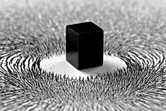

Magnetism

Magnets are substances that attract metals.
They have a magnetic field around them.
A magnetic field is the region around a magnet where its influence can be felt.
Any metals which are inside this magnetic region gets attracted to the magnet.
Magnets attract other magnets too.
They have got a north pole and a south pole.
Like poles of magnet repel
while unlike poles repel.
For example: North pole and North pole repel while south pole and north pole attract.
Magnets made by looping a copper wire around a rod which works when
electric current is passed are called electromagnets.
Magnets are used in many appliances like radios,speakers,televisions etc.